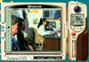

|
|
| 当前位置：电脑报电子版 > 1999 年 > 43 期 > 软件世界 > 录像带轻松转录VCD——CYBERLINK POWERVCR |
| 《 录像带轻松转录VCD——CYBERLINK POWERVCR 》 |
| 我一直梦想能把自己的录像带转刻为VCD以便播放和保存，但VCD压缩卡高昂的价格，使我等穷人望而却步。而传统的方法，是利用显卡的输入，生成AVI文件，然后通过XingMpeg EnCoder等软件转换成MPG文件，但生成AVI文件这一步，需要庞大的硬盘空间，两小时的录像带，10G的硬盘可能都不够，因此不是一个好办法。 有一天在网上闲逛，终于发现了“她”，“她”就是我的梦中情人CL CYBERLINK公司的共享软件，无时间限制、无功能限制、无须注册的CYBERLINK POWERVCR软件，可以把录像带实时压缩为MPG文件。我们可以一边压缩，一边观看，两小时的录像带只需硬盘1G左右，经他录制的MPG文件色彩鲜艳，图像清晰，而且还可把AVI文件快速转换为MPG文件，让XingMpegEnCoder走开（它转换AVI文件慢得简直像蜗牛）。另外，POWERVCR软件还可以使照片转换成VCD，可以代替压缩卡。该软件可在http:∥www8.silversand.net/nethome/newhua/hj_rjfl.htm下载。 下面是录制VCD的详细过程。 1．硬件：本人CPU为PⅡ400；显卡为华硕TNT 16M；带视频输入输出；声卡为中凌724；6G昆腾硬盘；飞利浦3610 CD－RW刻录光驱，录像机视屏输出线、音屏输出线各一根。 2．软件：Win98；CYBERLINK POWERVCR；ADOBE PREMIERE 42或50（照片转换为VCD）；刻录软件ADAPBEC EASY CDCREATOR 40或35。 3．请连接好视频输出线，音频输出线，安装POWERVCR软件，运行它，运行后也可以对它进行设置，使用缺省设置也可，录像非常简单（如图）。 4．录像完后，按停止，软件将自动生成MGP文件，录像时间的长短将视该软件默认的硬盘剩余空间的大小而定，60分钟大约需要800M。 5．MPG文件生成后，可以用解霸五把MPG文件分割为若干MPG片断，经过取舍编辑，也可以用POWERVCR把各个MPG片断合在一起，生成一个大MPG文件，以便刻录。 6如果想把自己的照片转刻为VCD，先把照片用扫描仪或数码相机转换成＊JPG格式等图片格式，再进入ADOBE PREMIERE 42或50编辑（具体过程略），生成AVI文件，然后用CYBERLINK POWERVCR转换为MPG文件。 7．最后进入刻录软件ADAPBEC EASY CDCREATOR，把MPG文件自动刻成VCD就成了（具体过程略）。 祝大家早日刻成属于自己的VCD。 (重庆 黄石) |
| 下载本期推荐软件 | 页 首 |
| 《电脑报》版权所有，电脑报网站编辑部设计制作发布 |